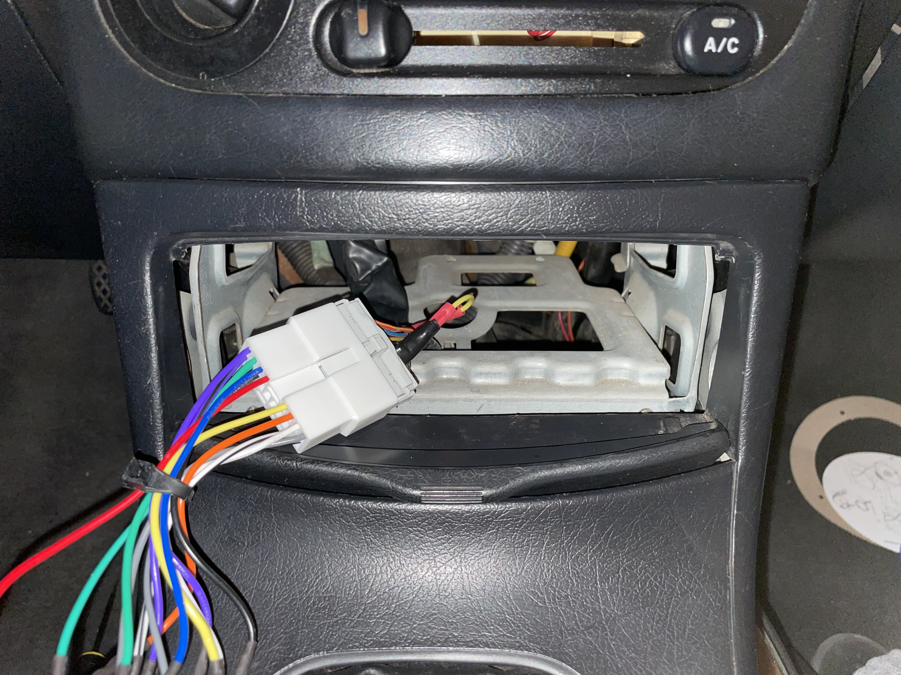
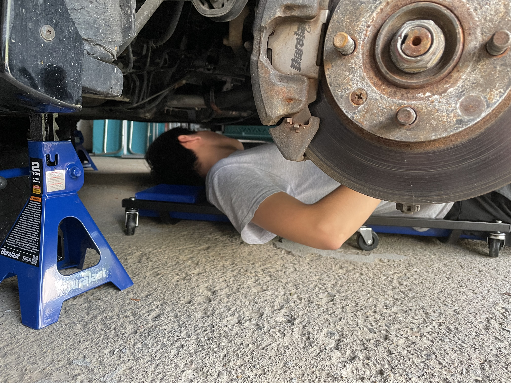
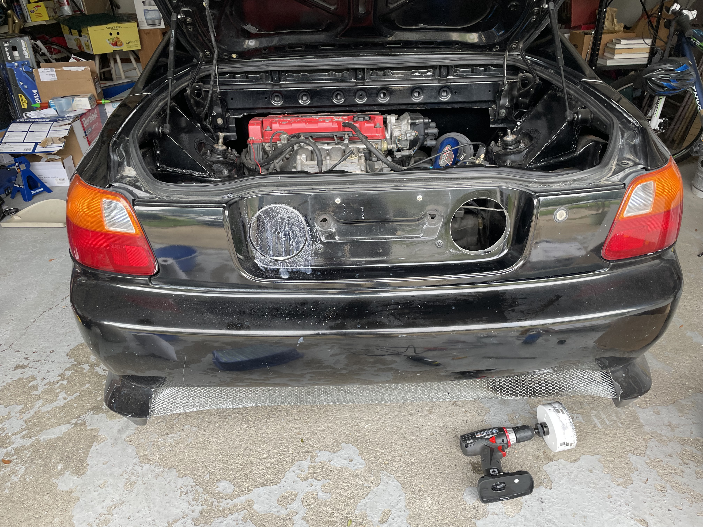
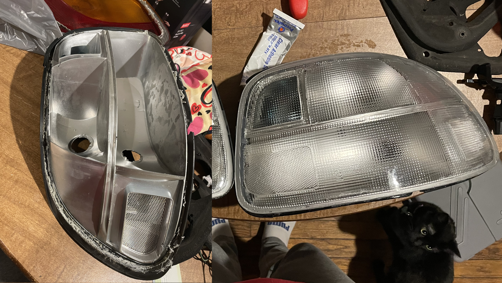
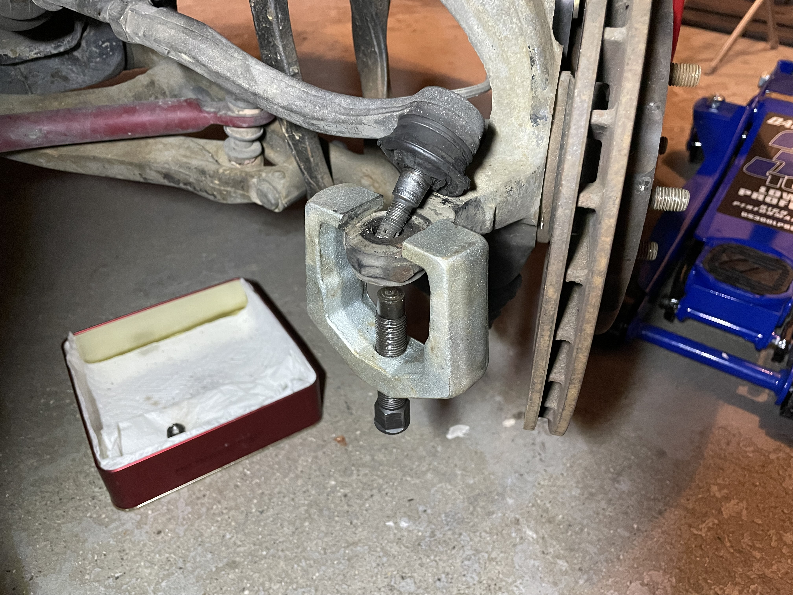
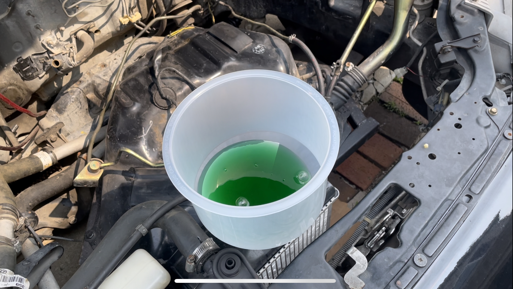

Car Project
Above: I spliced and joined the wiring harness for the head unit together to install a radio, since the car was missing a radio when I had bought it.

Above: Me inspecting the underside of the car to check for oil leaks.

Above: Drilling holes in the rear garnish for a new custom exhaust. The holes will be welded to seal it up and to prevent rust before the new exhaust is installed.

Above: I heated up the old tail lights in an oven to soften the adhesive so I could remove the stock lens. I then replaced the lens with a clear one, and installed LED bulbs.

Above: The tie rod ends' bushings were very badly worn, so I replaced the tie rod ends.

Above: Bleeding the air bubbles out of the coolant system to try to fix an overheating issue.